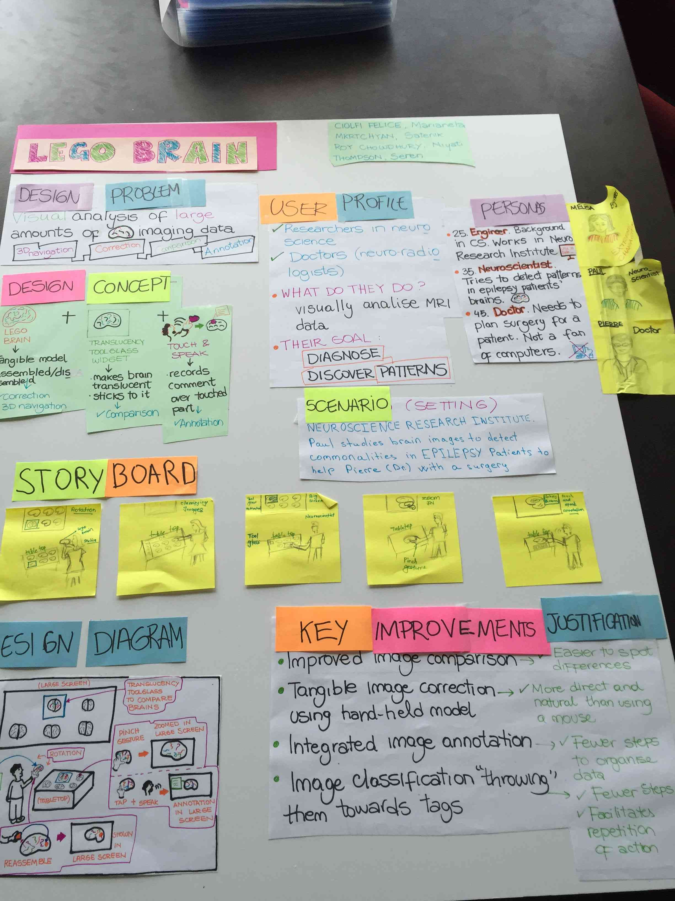
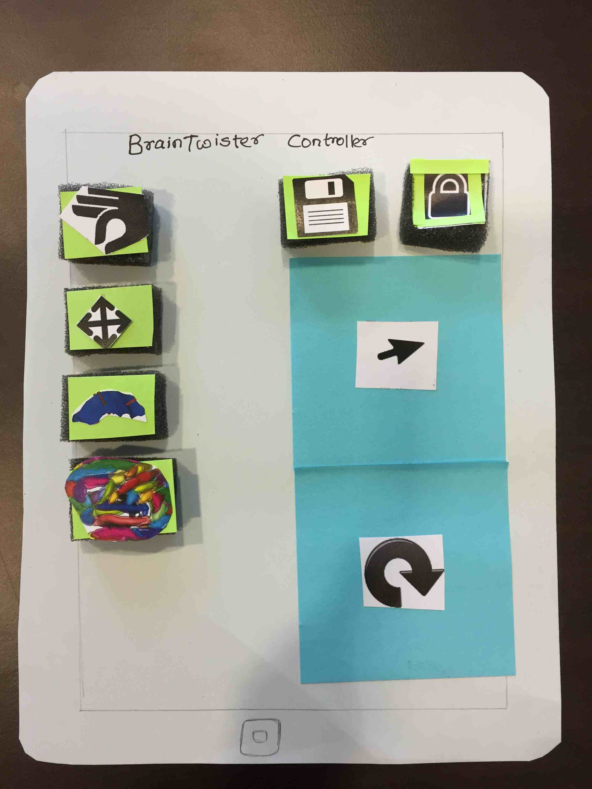
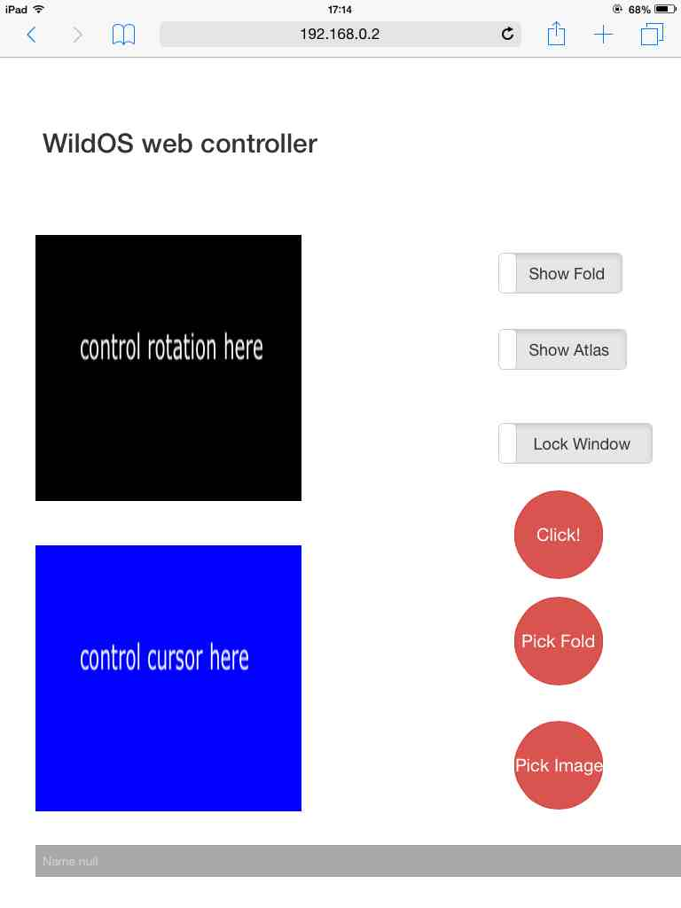
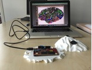
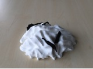

<main class="">
<div class="container">
  <table cellpadding="10">
  <tr>
    <td width="30%" align ="left" > <a href="#" id="pop"></a>
      <p>Storyboard</p></td>
    <td width="40%" align ="justify" valign="top"  ><h3>BrainTwister: A novel brain image analysis tool</h3><p><i>In this project, the aim was to design a system that can help neuroscientists and medical doctors to analyze brain imaging data with interactive environment. I conducted field study interviews with critical incident technique with 6 neuroscientists and 2 medical doctors. Out of which I collected 40 stories from the interviews. I created user scenarios, storyboard and personas. I categorized these 40 stories into 5 categories based on grounded theory approach. Based on these categories I created a prototype tool BrainTwister, having multiple brain images on the wall-sized display environment installed in INRIA-Saclay, France. I wanted to create a rich interactive environment. For this purpose I created 3 different interaction styles to interact with the data on wall-sized display. 
    <ul style="list-style-type: circle">
  <li>Indirect interaction with iPad as a remote controller</li>
  <li>Direct interaction with multi-touch interaction with wall display</li>
  <li>Direct interaction with interactive 3D printed brain model</li>
  </ul>
     Please check this <a href="https://www.dropbox.com/s/ksin2up0d9h02g4/BrainTwister_video.mov?dl=0"><font color="blue">video</font></a> for the working prototype.</i></p>
     
     </td> 
    
  </tr>
  <br>
  <tr>
    <td width="30%" align ="left">
      <p> iPad interfaces (mockup and final interface)</p>
    </td>
      <td width="40%" align ="justify" valign="top"><h2>iPad interface</h2><p><i>For indirect manipulation I used iPad tablet as a remote controller to interact with the data in the wall-sized display. I designed iPad interface with intuitive UI based on bimanual interaction. To create this UI, I created low fidelity mockups, wireframes and designed final interface for iPad (as seen in the picture). It was important to create an interface which requires less attention to concentrate more on the data on the wall display. Hence, I adopted the approach of bimanual interaction, where users can have controllers on both sides of hands for easy manipulation.
    </td>
  </tr>
  <tr>
    <td width="30%" align ="left"> 
      <p> Interactive 3D printed brain model</p>
    </td>
      <td width="40%" align ="justify" valign="top"><h2>Interactive 3D printed brain model</h2><p><i>For rich interactive experience with a complex brain imaging data, I created a 3D interactive brain model. Interactive parts of brain were printed with conductive plastic elements, which were wired to a PSOC4 kit to get capacitive sensing data. This capacitive sensing data was then used to interact with brain image on the screen (as shown in the video).
    </td>
  </tr>
  <tr>
    
  </tr>
  
</table>

     
<div data-editable-type="text" id="text_1" class="  " data-force-html-mode="false" data-content-module-unique-id="">

      <p><i>This project was done in collaboration with Prof. Michel Beaudouin-Lafon, Prof. Wendy Mackay, Prof. Jean-François Mangin, Guilherme Carneiro and Yuebai Xu.</i></p>    
</div>
    </div>
  </main>